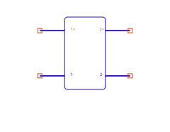
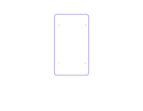
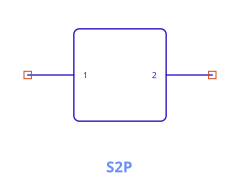
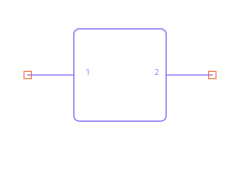

Dynamic Symbols (SDD, ZPort, SnP)
Most components have a fixed glyph. Three do not — their symbol and pin count are generated from the port count (and, for SnP, from arrangement options). This chapter explains how those symbols are built and how to control them.
Why some symbols are dynamic
An N-port's symbol can't be a fixed picture — a 2-port and a 5-port need different numbers of
pins. For the SDD, ZPort, and
SnP, circuitRF generates the body and pins from the NumPorts
parameter. Change the port count and the symbol regrows, with pins landing on the connection grid
so wiring stays clean.
SDD — 2N differential pins


The SDD exposes 2N pins as differential ± pairs — for an N-port, pins ordered 1+, 1−, 2+, 2−, …. Each port's voltage is the difference across its pair: port p's voltage _vp = V(p+) − V(p−), which is exactly the _v1, _v2, … you use in the equations. This differential layout
lets each port float with its own reference rather than being forced to ground. (In the netlist
example the FET writes gate 0 drain 0 — each port's minus pin tied to ground.)
The I[port, weight] / Q[port] equation grammar is summarized under Components ›
SDD.
ZPort — N signal pins


The impedance N-port grows with NumPorts and is defined by its impedance matrix Z[p,q] (an N×N
grid of entries). Its pins are the N signal ports; the parameter editor lists one Z[p,q] row per
matrix entry.
SnP — arrangement, pitch & floating reference


The Touchstone block's symbol is the most configurable. Besides NumPorts and the File, three
options shape the symbol and its reference convention:
Pin arrangement (PinConfig)
How the N pins are laid out around the body (e.g. the default Standard arrangement). Choose the
layout that wires most cleanly into your schematic; it changes only the symbol geometry, not the
electrical behavior.
Pitch (Pitch)
The spacing between pins (e.g. Loose by default). Tighter pitch packs a high-port-count block
into less space; looser pitch leaves room to wire each port. Pins always remain on the connection
grid.
External reference pin (RefNode)
By default each port is referenced to ground, so an N-port shows N nets. Set RefNode = true
to expose a common external reference pin instead — now the block has N + 1 nets, and all
ports are measured against that shared reference rather than ground. Use this when the data
block's reference is not circuit ground (a floating measurement).
This is the "N-or-N+1" rule: a frequency-domain N-port lists either N nets (each port to ground) or N+1 nets (the last being the common reference). It applies to SnP, ZPort, and similar frequency-domain blocks — not to 2-terminal R/L/C.
Interpolation (InterpMode) and out-of-range behavior (ExtrapMode)
control how the file's data is sampled onto the analysis sweep — see
Components › SnP.
See also: Components · Pins, Ports & Terms · Netlist format.